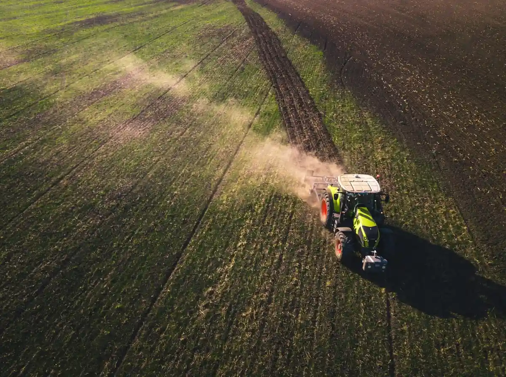
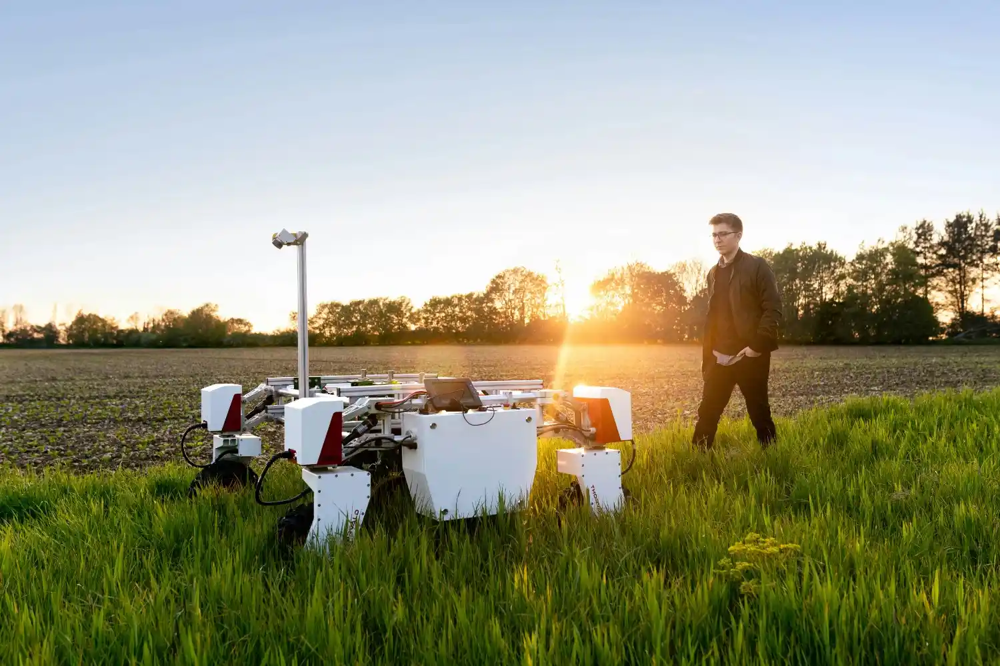
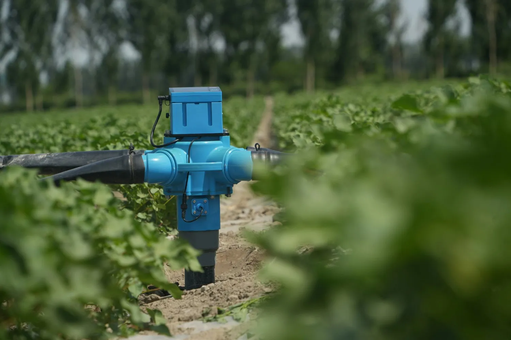
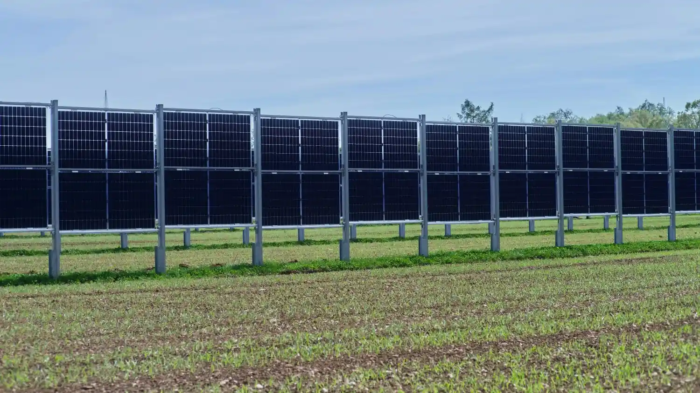

Explore our full suite of automated agronomy services. From real-time telemetry node clustering to predictive microclimate forecasting, we deliver the tools needed to maximize yield densities across any field scale.


Explore how Stackly transforms raw ground physics into automated field assets through our three-tier integration blueprint cycle.

Our agronomists execute full core surveys, mapping existing alkali baselines and drainage block constraints across your fields.

We install pre-calibrated carbon-spike hardware nodes, linking them into an offline radio frequency network across all acreage.

Telemetry data is routed to cloud servers, driving smart water valve switches and monitoring crop health parameters autonomously.
Review the granular data checkpoints, sensor telemetry boundaries, and automation payloads provided across our service infrastructure tiers.
Data refreshing every 15 seconds safely.
Deploying smart agriculture nodes should not require complex programming or manual system updates. Our synchronized pipeline ensures that your acreage transitions into a real-time data tracking engine instantly.
Scan the unique vector QR code printed on your ground spike instrument container. This links the hardware directly to your cloud infrastructure profile in seconds.
Sink the structural carbon-spikes directly into target soil sectors. The internal micro-solar panels automatically power up and connect to adjacent mesh trackers.


Deploy secure sensor clusters across your soil layouts in minutes. No complex programming or data engineering background required.


The Stackly customer portal translates raw electrical resistance spikes into actionable farming workflows. Access centralized field health conditions, historical hydration trends, and telemetry metrics from any desktop or mobile browser window.
Configure tailored push parameters to text or email networks the moment soil hydration levels drop beneath designated baselines.
Leverage machine learning regression tracks to project seasonal harvest multipliers weeks ahead of standard crop schedules.
Our electronic system layouts operate over deep redundant network layers. We secure data routing from the ground up, utilizing multi-channel edge processing pipelines to protect field monitoring configurations against remote downtime parameters.
Every node spike processes data points using AES-256 hardware cryptographic loops, preventing malicious interception loops across local data paths.
Integrate automated low-earth orbit fallback paths to preserve tracking pipelines, even during extreme weather cellular infrastructure drops.
Real metrics, real recovery records, and verified operational data transparency reported directly from active field partners.
"Stackly completely transformed our water resource overhead. We reduced standard automated irrigation consumption values by a clean 28% in under 90 days."

Vance Grain Co. (450 Acres)
"The leaf diagnosis scanner algorithm flagged a multi-bacterial spot development across our secondary greenhouses two weeks before physical indicators surfaced."

BioCanopy Organics Ltd.
"Operating an autonomous tractor fleet tracking setup used to cause configuration conflicts constantly. Stackly telemetry synced everything flawlessly."

Miller Crest Estates

Deploy secure sensor clusters across your soil layouts in minutes. No data engineering background required.